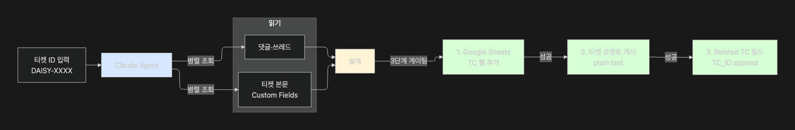
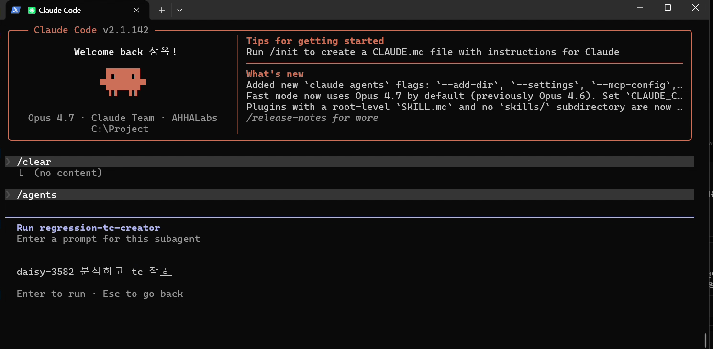
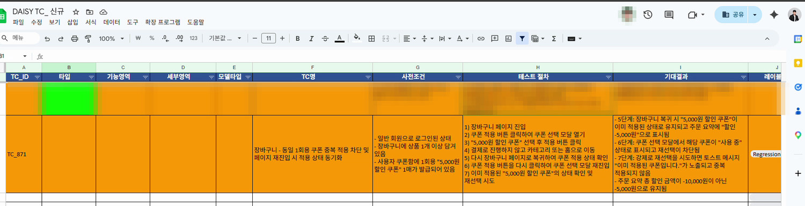
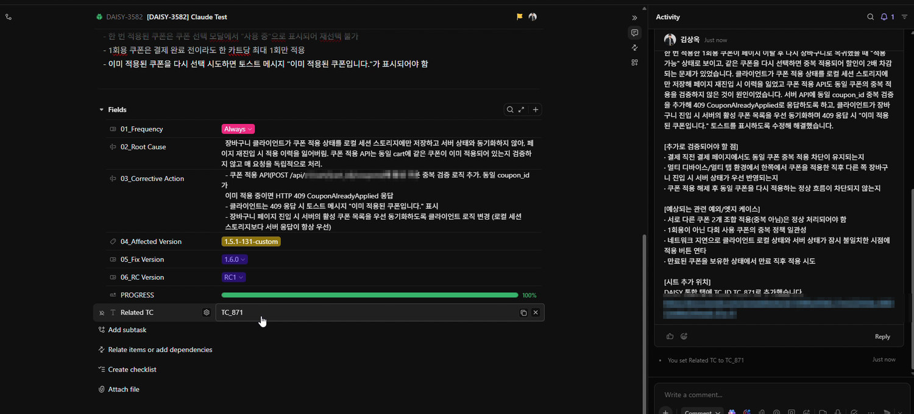
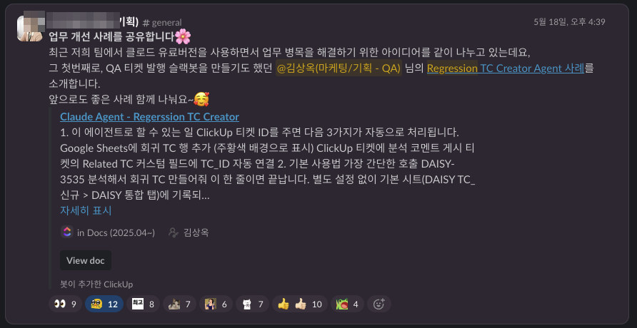

私が記入を必須化したRoot Causeの記録を読み取り、回帰テストケースを設計してGoogle Sheetsに記録し、チケットにコメントとフィールドまで連携するClaudeベースのAgentです。ルールを定めた本人が、そのルールが残したデータを活用するツールを自らつくりました。
RCAの記録は溜まる一方で、活用されない資産になるおそれがあり、回帰テストケースの設計・記録・連携は毎スプリント繰り返す手作業でした。
MCPツールの組み合わせ・3段階のゲーティング・安全策を備えた仕組みとして実装しました。
チケットIDを1行渡すだけで、テストケース設計・シートへの記録・チケット連携が自動で完了します。Related TCで紐付いた回帰資産は45件、他チームが社内の業務改善事例として共有しました。
役割 · 設計・実装・社内展開を単独で担当
QAワークフローを設計する中で、不具合チケットのRoot Cause・Corrective Actionの記入を必須化しました。 しかしこの情報は記録されるだけで活用されない資産になるおそれがありました — 毎スプリント、不具合チケットを1件ずつ読み、回帰テストケースを手で設計し、シートに記録し、 元のチケットに紐づける作業は単純作業の繰り返しでした。


エージェントをサブエージェントとして登録しておき、チケットIDを1つ自然言語で渡すだけです。 設定やオプションのフラグなしでデフォルトのシートに記録されるよう初期値を決め、 使う人が毎回決めることをなくしました。
チケットを要約するのではなく、過去の失敗モードを再現することを行います。
| 軸 | 内容 / 例 |
|---|---|
| Happy-path | 意図どおりに動く主要なエンドツーエンドのシナリオ |
| 入力・データの変化 | 境界値、通常値、意味のある組み合わせ |
| エラー・失敗条件 | 不正な入力、欠損データ、タイムアウト、権限、連携の失敗 |
| 連携・外部システム | 他のサービス、モデル推論、ストレージ、バックエンドの応答に基づくUI更新 |
| Frequency・繰り返し | 頻繁な実行、バッチ・スケジュール、ピーク時の安定性 |
エージェントが形だけのテストケースを量産しないよう、出力量のルールを明確に定めました。
14列の書式で、シートの最終行の次に直接記録します。
レビュー用のシートを別につくらず正本に直接書き込むのは、意図した選択です — シートが2つあると誰も見ません。
その代わり、正本の中にレビューの仕掛けを設けました。Agentが追加した行はオレンジ色の背景にし、
作成者はClaudeに固定し、分類欄は空けておいてQAが埋めるようにしました。
分類が空のオレンジ色の行が、そのまま「まだ人が見ていないテストケース」です。また、
wrapStrategy: WRAPを適用してセル内の改行が実際に見えるようにしました。

テストケースの表はコメントに入れず、テストケースはシートが正式版という原則を守ります。 コメントには簡単な分析・追加の検証ポイント・関連するエッジケース・シートの追加位置だけが入ります。 生成したTC_IDはチケットのRelated TCフィールドに既存の値を残したまま追記し、 双方向のトレーサビリティが自動で残ります。

プルダウン・条件付き書式が設定された空の領域があると、APIがその領域までを「テーブル」と認識し、 最後のデータ行から10〜20行離れた場所に行を入れてしまいました。
→ add_rowsの使用をやめ、
最後のデータ行 + 1から始まる明示的なセル範囲を計算して直接書き込むよう設計を変更。
Markdownで書くと**強調**・## 見出し・- 箇条書きが
すべて記号のまま表示されていました。
→ Markdownを全面禁止にルールを変え、
見出しは角括弧、箇条書きは中黒、強調はALL CAPS:のパターンで、
プレーンテキストでも見た目の構造が残るよう設計し直しました。
シートの最終行のTC_IDを先に読み取り、その形式を保ったまま連番だけを増やします。 数字だけなら+1、接頭辞があれば接頭辞を維持。 Agentが出どころや形式を勝手につくらないよう制約することが要点でした。
つくって使うことと、組織に受け入れられることは別の問題です。 このエージェントは私が宣伝したのではなく、他のチームが社内の改善事例として紹介したことで広まりました。
